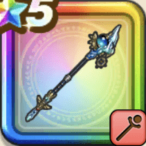

世界樹の氷杖【魔】
攻略班 8.5点 / マヌーサ黒の魔砲導きの魔閃マヒャドストーム不滅の誓約
くわしい特徴
【レベル別習得スキル】 Lv1【魔剣士】こうげき魔力+5 Lv1【大魔道士】さいだいMP+5 Lv1ヒャド属性じゅもんダメージ+10% Lv10マヌーサ（消費MP：16）敵全体を幻でつつみこむ Lv20黒の魔砲（消費MP：39）敵全体にドルマ属性の呪文大ダメージを与え、まれに敵の呪文耐性あるいはブレス耐性を下げる Lv25導きの魔閃（消費MP：53）敵1体にギラ属性の呪文絶大ダメージを与える(このスキルは自身に付与されている効果の数に応じて威力が上昇する) Lv30マヒャドストーム（消費MP：53）敵1体にヒャド属性の呪文中ダメージを5回(絶大ダメージ相当)与え、まれに自分のすべての状態異常耐性を上げる Lv33けもの系へのダメージ+5% Lv36物質系へのダメージ+5% Lv40さいだいMP+12 Lv45こうげき魔力+12 Lv50不滅の誓約（消費MP：20）自身に不滅の誓約を付与(効果5ターン)。致死ダメージをうけると不滅状態になり死ななくなるが、不滅状態中にHPを全快しないと死亡する 【限界突破スキル】 1凸じゅもんダメージ+7% 2凸じゅもんダメージ+7% 3凸じゅもんダメージ+7% 4凸じゅもんダメージ+7%